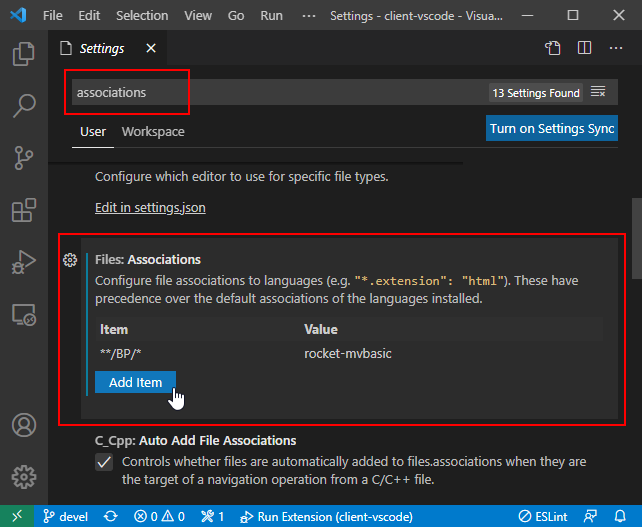
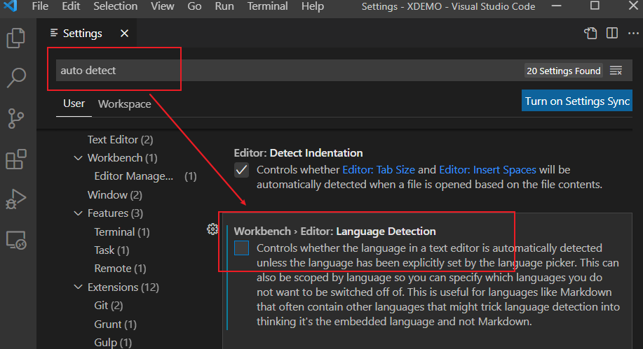
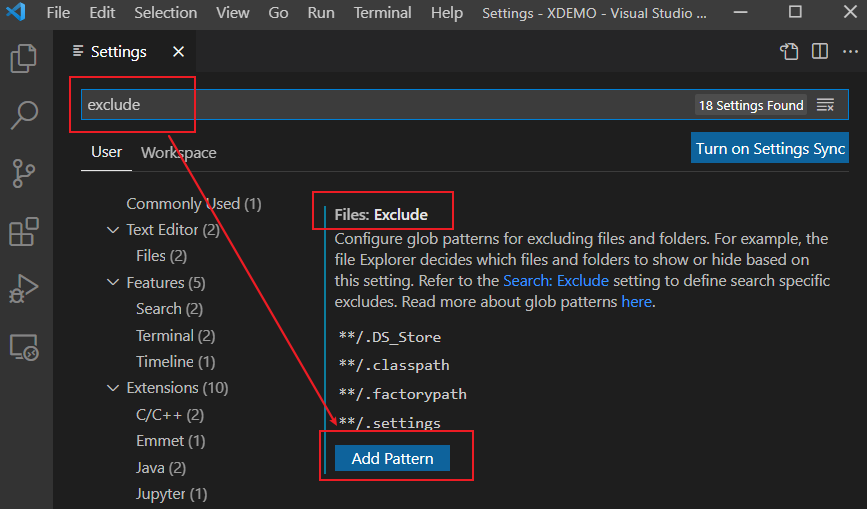

FAQ
Q: How do I activate the extension automatically?
A: By default, when open a file ends with a ".B" suffix, the extension could be activated automatically. If your files don't have such suffix, you can setup file associations to activate the extension.
Press F1 to open a command line in VS Code, then enter "Open Settings (UI)" to open the settings page.

Search "associations" in the Settings page and find the setting "Files: Associations". Add an item in this setting (the item content accepts a glob pattern).
The item in the example image above specifies that the Rocket MV BASIC extension will be activated when any file in the BP folder is opened.
Q: I have set the files association, but when I open a BASIC program file, the language changed.
A: This is a new feature named "Auto Detect Language" of VS Code (since the 1.60 release). It auto detects and sets the language of your files even when you have already set files associations. You can disable this feature following the steps below:
- Open VS Code Settings: press F1, input "setting", then select "Open Settings (UI)"
- Search for "auto detect", and then find and disable the "Language Detection" setting.

Q: How can I exclude specific files from a folder? For example, files start with "_".
A: VS Code provides a function to exclude useless files. Follow the steps below to exclude files:
-
Open VS Code Settings: press F1, input "setting", then select "Open Settings (UI)"
-
Search for "exclude", and then find the setting "Files: Exclude"

-
Click "Add Pattern", and then enter a pattern that exists in the file names you want to exclude.
Q: Why sometimes the extension failed to upgrade on Windows platform?
A: This is because some files of the extension still being used. To resolve this issue, please follow below steps:
-
Uninstall MV BASIC extension first.
-
Close all VS Code and java processes through task manager.
-
Manually remove the MV BASIC extension directory under user profile. For example, you may find MV BASIC extension version 1.6.0 in "C:\Users\user_name.vscode\extensions\rocketsoftware.rocket-mvbasic-1.6.0".
-
Restart VS Code and install the latest extension.
Q: Why isn’t the debugging functionality working? It was working well before.
A: This may be a result of the VS Code upgrade. In VS Code 1.79.x, the debugging functionality has some updates which impact our extension. If you encounter debugging issues, please try to downgrade VS Code to version 1.78.2 (on which the debugging functionality should work well). Please refer VS Code Compatibility for more details.
Q: How can I exclude specific files from the explorer view? A: You can update the vscode settings file “.vscode/settings.json” to exclude files. For more details, please refer VS Code official online documentation.